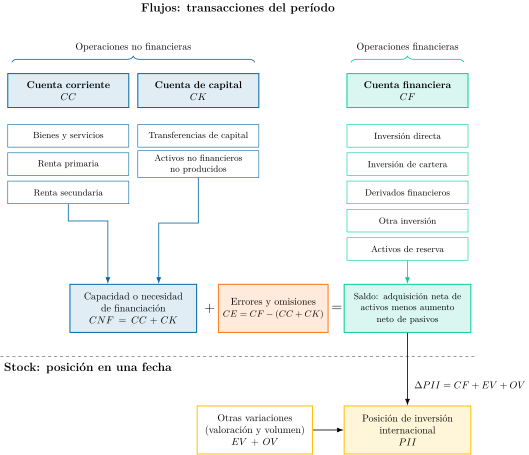

Apuntes para la oposición al Cuerpo de Diplomados Comerciales del Estado
19 Balanza de Pagos: concepto, medición e interpretación.
Tema pendiente de revisión. Este tema está publicado pero aún no lo he revisado a fondo: puede contener erratas o partes por pulir.
19.1 Introducción  1'
1'
La economía global siempre está inmersa en un cambio constante con crisis, pandemias, guerras comerciales y no comerciales... Sin embargo, nuestra necesidad de medir y comprender estos flujos no ha cambiado. Para ello, recurrimos a un instrumento histórico: la balanza de pagos.
Así, la balanza de pagos es un documento contable que recoge las transacciones económicas que los residentes de un país realizan con no residentes durante un determinado período de tiempo. Este documento tiene una importancia trascendental en el análisis económico pues permite:
Comprender las relaciones de un país con el resto del mundo.
Analizar los desequilibrios económicos que producen dichas relaciones (deuda, cuenta corriente, etc.).
Realizar comparaciones internacionales.
Concretamente, el documento de balanza de pagos se elabora con arreglo a las directrices del FMI. Actualmente, y desde octubre de 2014 en España (Banco de España 2014), se encuentra en vigor el VI Manual de Balanza de Pagos y Posición de Inversión Internacional (MBP6), que el VII Manual (MBP7) sustituirá entre 2029 y 2030 (FMI 2025c).1 Junto con la Posición de Inversión Internacional, PII, y los otros cambios en la PII, la balanza de pagos configura las cuentas internacionales de una economía.
Por consiguiente, el objetivo de la presente exposición será el estudio de la balanza de pagos a través del siguiente esquema:
Concepto, donde se estudiará su estructura.
Medición, mediante los principios contables de registro y valoración y las fuentes de información.
Interpretación, concretamente de los saldos, de la sostenibilidad del déficit exterior y de sus implicaciones de política económica.
19.2 Concepto 6'
Comenzando por el concepto, la balanza de pagos es un documento contable que recoge las transacciones económicas que los residentes de un país realizan con no residentes durante un determinado período de tiempo.
Transacciones económicas
Concretamente, una transacción es una interacción entre dos unidades institucionales, por mutuo acuerdo o por imperativo legal, que implica un intercambio de valor o una transferencia sin contrapartida. Puede consistir en:
El traspaso de propiedad de bienes y/o activos financieros.
La prestación de servicios.
El suministro de factores productivos (mano de obra o capital).
La entrega de recursos sin contrapartida (transferencias corrientes y de capital).
Residente
Además, es necesario definir el concepto de residente: según el VI Manual un agente será residente de aquel país donde tenga su centro de interés económico predominante (FMI 2009, párr. 4.113). De modo más específico:
Personas físicas: un hogar es residente del territorio económico en el cual sus miembros mantienen su vivienda principal. Como criterio operativo, la presencia en un territorio durante 1 año o más basta para determinar que allí se encuentra la vivienda principal (FMI 2009 párrs. 4.114 y 4.117), con excepciones como estudiantes y pacientes en el extranjero o personal diplomático y militar (FMI 2009 párrs. 4.119-4.120).
Personas jurídicas: una empresa es residente del territorio económico donde realice las principales actividades y transacciones económicas, o donde posea activos significativos (edificios, etc.)2.
Administraciones públicas: son residentes del país los ministerios y los organismos de las administraciones central, autonómica, provincial y local, y también las embajadas, consulados y bases militares que mantiene en el exterior, que forman parte de su territorio económico, y su personal enviado desde el país (FMI 2009, párr. 4.123).
Estructura de la balanza de pagos
Las distintas cuentas que conforman la balanza de pagos se distinguen según la naturaleza de los recursos económicos que computan. Las cuentas son:
Cuenta corriente (CC), que se divide a su vez en 3:
Subcuenta de bienes y servicios.
Subcuenta de rentas primarias (el VI Manual la llama cuenta de “ingreso primario”).
Subcuenta de rentas secundarias (el VI Manual la llama cuenta de “ingreso secundario”).
Cuenta de capital (CK).
Cuenta financiera (CF).
Cuenta de errores y omisiones (CE).
Igualdad contable
Las 4 cuentas dan lugar a una igualdad contable, de forma que3: \[CC+CK+CE=CF \tag{19.1}\]
En suma, la Cuenta Corriente, \(CC\), y la Cuenta de Capital, \(CK\), recogen la parte no financiera del sector exterior, mientras que la Cuenta Financiera, \(CF\), recogerá la parte financiera. Así, la \(CC\) y la \(CK\) anotarán ingresos y gastos y la \(CF\) registrará la variación neta de activos y de pasivos.
Gráficamente, en un esquema de cuentas y saldos como el de la Figura 19.1, se representan los flujos de la balanza de pagos y la posición de inversión internacional. Así:

La cuenta corriente y la cuenta de capital, en azul, recogen las operaciones no financieras y suman la capacidad o necesidad de financiación, \(CNF\).
La cuenta financiera, en verde, recoge sus cinco categorías y su saldo es la adquisición neta de activos menos el aumento neto de pasivos.
Ambos lados coinciden salvo por los errores y omisiones, \(CE\), en naranja: \(CNF+CE=CF\).
Por debajo de la línea discontinua, la posición de inversión internacional, \(PII\), es un stock: su variación entre dos fechas es la cuenta financiera más las otras variaciones de valoración y de volumen.
A continuación se analiza cada una de estas rúbricas.
Cuenta Corriente
Recoge las transacciones no financieras entre residentes y no residentes durante el periodo considerado.
Subcuenta de bienes y servicios
que se divide a su vez en las subcuentas de:
Subcuenta de bienes (o balanza comercial): registra el tráfico de bienes entre países. Se anotan como ingresos las exportaciones y como pagos las importaciones. No constituyen, sin embargo, comercio de bienes aquellos movidos temporalmente sin un traspaso de la propiedad (por ejemplo, bienes para ser transformados o reparados, como ahora veremos). El MBP6 fija qué operaciones son bienes (mercancías generales, compraventa de bienes sin cruce de frontera y oro no monetario), pero cada país elige su propia clasificación detallada de productos (FMI 2009, cap. 10).
Subcuenta de servicios: registra la prestación de servicios entre países. De nuevo, se anotan como ingresos las exportaciones y como pagos las importaciones. Los principales servicios recogidos en esta sub-cuenta son:
Servicios de manufactura sobre insumos físicos pertenecientes a otros. Se trata del valor añadido por transformación, ensamblaje, empaquetado, etc. realizado por empresas que no son dueñas del bien y que reciben un pago por dicho valor añadido (por ejemplo, refino de petróleo, licuefacción de gas natural, ensamblaje de textil y de productos electrónicos, etc.). El bien físico que se traspasa no consta como importación/exportación de bienes.
Servicios de mantenimiento y reparaciones. Se trata de los servicios de mantenimiento y reparación realizados por empresas que no son dueñas del bien. De nuevo, el bien físico que se traspasa no consta como importación/exportación, como sí ocurría con el anterior Manual.
Transporte. Son todos los servicios de llevar personas u objetos de una localidad a otra, así como los servicios de apoyo y auxiliares. Con el nuevo Manual los “servicios de comunicación” se dividen, de forma que los servicios postales y de mensajería se incluyen dentro de los servicios de transporte, mientras que los servicios de telecomunicaciones se agrupan con los de informática y gestión. Se excluyen los suministros de combustible que se contabilizan en la balanza de bienes. Incluye fletes a plazo.
Turismo y viajes. Se incluyen en esta categoría los bienes y servicios adquiridos por personas que residen en otro país y que se desplazan al país por motivos personales o de negocios para estancias inferiores a 1 año. El FMI recomienda un desglose por motivo del viaje.
Construcción. Las operaciones de construcción realizadas por empresas extranjeras en nuestro país cuentan como importaciones. No obstante, si las operaciones de una empresa extranjera de construcción son considerables, se puede considerar una sucursal residente en el país de destino (lo que ocurrirá generalmente cuando un gran proyecto de construcción se demore más de un año). También se incluyen bienes y servicios adquiridos por la constructora en nuestro país.
Servicios de seguros y pensiones. Se excluyen prestaciones y cotizaciones a la SS (R2ª) y servicios sobre seguros de crédito a la exportación (son servicios financieros). Los servicios se valoran por el cargo del servicio de las primas y no por las primas totales. Las primas netas (descontado el cargo por el servicio) y las indemnizaciones van a renta secundaria excepto los seguros de vida que van a la cuenta financiera.
Servicios financieros. No se incluyen los cobros y pagos relacionados con el principal o con los rendimientos del capital: estos van en la cuenta financiera y en la de rentas primarias, respectivamente. Se contabilizan aquí, pues, las comisiones. Por ejemplo, captación de depósitos, factoring, asesoramiento financiero.
Cargos por el uso de la propiedad intelectual. Recogen los pagos por el derecho a usar patentes, marcas, derechos de autor, procesos industriales y franquicias, es decir, los cánones o regalías. La compraventa en firme de los resultados de la I+D y de los originales de programas y obras audiovisuales es un servicio (de I+D, informático o audiovisual). Solo la compraventa de marcas y otros activos de comercialización figura en la cuenta de capital.
Servicios de telecomunicaciones, informáticos y de información: (i) Telecomunicaciones: Emisión o transmisión de sonidos, imágenes, datos u otra información por teléfono, TV o internet. (ii) Informáticos: Los servicios relacionados con equipos, programas diseñados a medida del consumidor y con las licencias de uso. (iii) Información: Servicios ofrecidos por las agencias de noticias y los servicios de bases de datos.
Otros servicios empresariales: Se incluyen los de I+D, los de consultoría, los técnicos, los relacionados con el comercio, los agrícolas, los mineros y el tratamiento de residuos y el arrendamiento o leasing operativo. En los servicios de I+D se registra la investigación básica y aplicada y el desarrollo de productos y procesos. Se incluye también la compraventa de los resultados de la I+D (patentes) y no se incluyen los cobros/pagos por las licencias de uso.
Servicios audiovisuales, personales, culturales y recreativos: Los servicios audiovisuales incluyen los asociados a la producción de películas. Los servicios personales son servicios relacionados con la salud o la educación.
Bienes y servicios del Gobierno (no incluidos en otras partidas): Agrupa los cobros y pagos relacionados con gastos de embajadas, consulados, unidades militares, salud, educación, etc.
Subcuenta de rentas primarias
Esta cuenta muestra las cantidades pagadas y cobradas a cambio de facilitar a otra entidad el uso temporal de: i) mano de obra, ii) activos financieros o iii) activos no financieros no producidos (los rendimientos de activos no financieros producidos –por ejemplo, patentes– dan lugar, como veíamos, a un servicio, no a una renta). Era la antigua balanza de rentas.
Se divide a su vez en las siguientes subcuentas:
Rentas del trabajo (remuneraciones a trabajadores): se anotan como ingresos las rentas que los residentes reciben por servicios prestados a no residentes, y como pagos las rentas que los residentes dan por servicios prestados por no residentes. Trabajadores que se trasladan a un país por periodo inferior a un año, temporeros …
Rentas de inversión (remuneraciones a los propietarios del capital): se anotan como ingresos los intereses que los residentes reciben por los recursos financieros prestados a no residentes y los dividendos que reciben por la posesión de acciones de empresas no residentes, y como pagos los intereses que los residentes dan por los recursos financieros prestados por no residentes y los dividendos que las empresas residentes dan a los no residentes poseedores de acciones de dichas empresas residentes. También se incluyen los beneficios reinvertidos de la inversión directa, que se imputan al inversor aunque la empresa no los reparta (FMI 2009, cap. 11). El alquiler de edificios no figura entre las rentas, sino en la cuenta de servicios (FMI 2009, párr. 10.157).
Otra renta primaria:
Recoge los impuestos y subvenciones sobre la producción y las importaciones que se pagan o reciben del exterior, y la renta por el arrendamiento de la tierra y de otros recursos naturales (FMI 2009 cuadro 11.1). En el caso español son relevantes las relaciones con la UE, que recauda impuestos y paga subvenciones.
En España resultan relevantes como ingresos las transferencias al sector privado procedentes del FEAGA, y como pagos las aportaciones a la UE por los llamados “recursos propios tradicionales”.
A partir de diciembre 2015, debido a la constitución del FUR, también se incluyen aquí las aportaciones del sector crediticio español a dicho fondo.
Subcuenta de rentas secundarias
En el anterior Manual esta cuenta se llamaba “cuenta de transferencias corrientes”. El nuevo Manual ha adaptado su nomenclatura a la de las Cuentas Nacionales. Esta cuenta recoge aquellas operaciones sin contrapartida (es decir, las transferencias corrientes), bien por transferencias personales o bien por asistencia internacional.
Por consiguiente cabe señalar que:
La distinción entre transferencias corrientes y transferencias de capital (que veremos después) no es inmediata. Para distinguirlas, el FMI opta por dar en su Manual una definición de transferencias de capital, de modo que las transferencias corrientes se definen por exclusión (luego las veremos)4.
Se anotan como ingresos las entradas de recursos, y como pagos las salidas.
Las transferencias corrientes pueden desagregarse en función del sector del que procedan:
Sector privado: remesas, impuestos (sobre el patrimonio, beneficios), cotizaciones a la Seguridad Social, las destinadas a las ISFLSH, indemnizaciones de seguros distintos del de vida, etc.
Sector público: ayuda al desarrollo (AOD), transferencias de los países miembros a la UE, etc. Pagos: recursos IVA y RNB. Ingresos: FSE+, la parte de los fondos Next Generation que financia gasto corriente, y multas y sanciones impuestas por tribunales u organismos españoles a no residentes.
Saldo de la cuenta corriente
La suma de los ingresos y pagos de las partidas anteriores da lugar al saldo de la balanza por cuenta corriente, que puede mostrar superávit (si los ingresos son mayores que los pagos), o déficit (si los pagos son mayores que los ingresos): \[CC=\underbrace{\left(X-M\right)}_{\text{bienes y servicios}}+R1^{\text{ª}}+R2^{\text{ª}} \tag{19.2}\]
Cuenta de Capital
La cuenta de capital muestra las transferencias de capital entre residentes y no residentes, \(TK\), y las disposiciones menos las adquisiciones de activos no financieros no producidos, \(ANFNP\), \[CK=TK+ANFNP\] Ambas partidas se miden en términos netos de ingresos menos pagos. Son operaciones no financieras: no crean ni extinguen por sí mismas activos o pasivos financieros, aunque su contrapartida contable, por ejemplo el cobro en efectivo, sí se anota en la cuenta financiera5.
Por lo tanto, la cuenta de capital está compuesta de 2 partidas:
Transferencias de capital6:
Traspaso de efectivo condicionado a la compra de un activo fijo. Por ejemplo: fondos europeos, es decir, FEDER, Fondo de Cohesión, FEADER o los Next Generation7.
Condonación de una obligación (la cancelación de una deuda incobrable no se registra aquí, sino en la cuenta de otras variaciones de activos y pasivos, que se estudia más adelante).
Se anotan como ingresos las entradas de recursos, y como pagos las salidas.
Compraventa de activos no financieros no producidos8. Recogen la compraventa de activos no financieros no producidos, que pueden ser:
Activos de comercialización: marcas, cabeceras de publicaciones, logotipos y nombres de dominio, vendidos por separado de la empresa que los posee, y el fondo de comercio.9
Recursos naturales: tierras, derechos minerales, forestales, de pesca, agua, espacio aéreo y espacio electromagnético. Si lo que se traspasa no es la propiedad sino el derecho a utilizar un recurso natural, entonces se trata de una renta que se computa en la cuenta de rentas primarias.
Contratos, arrendamientos y licencias. Son creaciones del sistema jurídico, como por ejemplo los arrendamientos operativos, las licencias gubernamentales o los derechos de compra.
Se anotan como ingresos las enajenaciones de activos, y como pagos las adquisiciones.
Saldo de la cuenta de capital
La suma de los ingresos y pagos de las partidas anteriores da lugar al saldo de la cuenta de capital, \(CK\), que puede mostrar superávit o déficit.
La suma de este saldo y el de la cuenta corriente nos indica la capacidad o necesidad de financiación de la economía, \(CNF\), \[CC+CK=CNF=CF \tag{19.3}\] que, obviando la cuenta de errores y omisiones, es igual al saldo de la cuenta financiera, \(CF\), que analizamos a continuación.
Cuenta Financiera
La cuenta financiera recoge las variaciones de activos y pasivos financieros (ahora en vez de débitos y créditos son VNA y VNP) de un país frente al resto del mundo. Se trata de asientos de contrapartida: por ejemplo, una exportación de bienes va seguida de un aumento de los activos nacionales (billetes, moneda, depósito, crédito comercial…).
En este marco, la adquisición neta de activos y el aumento neto de pasivos se anotan, cada uno, con signo positivo cuando aumentan, y el saldo de la cuenta financiera es la primera menos el segundo, de modo que las entradas netas de capital lo reducen y las salidas netas lo aumentan.
Subcuentas
La cuenta financiera está compuesta, a su vez, por 5 sub-cuentas:
Inversión directa. Es la inversión de un residente que le da el control o un grado significativo de influencia en la gestión de una empresa residente en otra economía, y suele responder al objetivo de obtener una rentabilidad duradera. Concretamente, para poder considerarse inversión directa, el Manual exige una participación de, al menos, el 10 % del poder de voto de la empresa en que se invierte (FMI 2009, párr. 6.12).
Inversión de cartera. Comprende las transacciones en valores de deuda o de capital que no forman parte de la inversión directa ni de los activos de reserva, normalmente motivadas por la búsqueda de una mejor combinación de rentabilidad y riesgo. Acciones y participaciones en fondos de inversión y valores representativos de deuda de cualquier vencimiento. Más volátil que la IED.
Derivados financieros y opciones sobre acciones de empleados. Constituyen una categoría funcional propia, junto con las opciones sobre acciones concedidas a empleados (FMI 2009, párr. 6.61). Incluyen entre otros opciones, futuros, warrants y swaps, tanto emitidos en mercados organizados como over-the-counter. Cumplen funciones de cobertura de riesgos, arbitraje y especulación. Se valoran a precio de mercado y, cuando no hay cotización, por su valor razonable, estimado con modelos de valoración que dependen del precio del subyacente (FMI 2009, párr. 7.33). La clasificación en activos y pasivos es compleja, porque el MBP6 recomienda anotarlos por separado, pero admite que la balanza de pagos presente solo el neto de variación de activos menos variación de pasivos cuando medir las transacciones en términos brutos no es viable (FMI 2009, párr. 6.60), mientras que en la PII se clasifican por separado.
Otra inversión. Se trata de una categoría residual que incluye las transacciones que no se incluyen en las otras cuentas (como, por ejemplo, los préstamos del FMI, depósitos, crédito comercial, leasing financiero…). Los depósitos suelen ser los más relevantes.
Variación de los activos de reserva. Las reservas son los activos exteriores, en moneda extranjera, de los que disponen y que controlan las autoridades monetarias (bancos centrales) para financiar desequilibrios de la balanza de pagos o intervenir en el mercado de divisas10. Incluyen divisas, oro, derechos especiales de giro, posición de reserva en el FMI, etc.
Las reservas se consideran activos frente al resto del mundo. Por tanto, un aumento de las reservas se registra como una adquisición neta de activos, es decir, con signo positivo en la cuenta financiera.
En principio, las variaciones de las reservas en regímenes flexibles deberían ser moderadas, indicando que el ajuste se produce a través del tipo de cambio.
Algunos autores apuntan que lo prudente es mantener un nivel de reservas equivalente a, al menos, 3 meses de importaciones.
Saldo de la cuenta financiera
La adquisición neta de activos menos los pasivos netos incurridos da lugar al saldo de la cuenta financiera, que, salvo errores y omisiones, equivale al saldo de la cuenta corriente más el de la cuenta de capital. Si es positivo, la economía presta al resto del mundo (préstamo neto). Si es negativo, se endeuda con él (endeudamiento neto).
Cuenta de errores y omisiones
Motivos de los errores y omisiones: i) datos que proceden de diferentes fuentes ii) uso de redondeos iii) operaciones exentas de declaración iv) mayor dificultad para identificar el comercio de servicios con el de bienes.
Si bien en principio las cuentas de la balanza de pagos están equilibradas por el principio de partida doble, en la práctica surgen desequilibrios por imperfecciones en los datos. La cuenta de errores y omisiones es la diferencia entre la cuenta financiera y la suma de las cuentas corriente y de capital.
Por consiguiente, un valor positivo en la cuenta de errores y omisiones indica una de las siguientes posibilidades:
El valor de los ingresos en las cuentas corriente y de capital es demasiado bajo.
El valor de los pagos en las cuentas corriente y de capital es demasiado alto.
El valor del aumento neto de los activos en la cuenta financiera es demasiado alto.
El valor del aumento neto de los pasivos en la cuenta financiera es demasiado bajo.
Finalmente, las 4 cuentas anteriores dan lugar, como decíamos, a un equilibrio contable11: \[CC+CK+CE=CF \tag{19.4}\]
Cuenta de otras variaciones de los activos y pasivos financieros: Permite conciliar la BP con la PII
Mientras que la cuenta financiera recoge la adquisición de activos financieros y la emisión de pasivos financieros, la cuenta de “otras variaciones de los activos y pasivos financieros” muestra flujos que no se derivan de transacciones de la balanza de pagos, es decir, abarca:
Las variaciones de volumen distintas de las transacciones (OV) (como, por ejemplo, cancelación unilateral de la deuda por parte del acreedor o reclasificaciones). Suele ser poco importante en comparación con el EV.
Efecto valoración (EV) esto es, las variaciones producidas por cambios de los precios/cotización de los activos y pasivos y por cambios en el tipo de cambio. Revalorizaciones de activos (+), revalorización de pasivos (-). Las pérdidas de valor se anotan con signo contrario.
La PII se elabora en moneda local. Una depreciación de la moneda nacional eleva el valor en moneda nacional de los activos denominados en moneda extranjera, lo que mejora la PII, y el de los pasivos denominados en moneda extranjera, lo que la empeora. El efecto neto depende de la composición por monedas de ambos.
La cuenta de “otras variaciones” NO forma parte de la balanza de pagos.
Junto con la cuenta financiera, las otras variaciones de los activos y pasivos financieros explican la variación de la posición de inversión internacional que estudiaremos a continuación: \[\Delta PII=CF+\underbrace{EV+OV}_{\text{Otras variaciones}} \tag{19.5}\]
La Posición de Inversión Internacional
La Posición de inversión internacional (PII) recoge, en una fecha, el valor (no las variaciones) de los activos financieros de los residentes frente a no residentes y de sus pasivos frente a ellos. Su saldo es la posición neta de inversión internacional (PIIN)12, que se obtiene tomando los activos exteriores y restándole los pasivos exteriores13.
La variación de la posición de inversión internacional, \(\Delta PII\) es igual a la suma de la cuenta financiera, \(CF\), (es decir, transacciones financieras) y de la cuenta de otras variaciones de los activos y pasivos financieros, que se compone de las otras variaciones de volumen, \(OV\), y del efecto valoración, \(EV\). Además, el FMI recomienda elaborar un estado contable independiente que recoja las variaciones netas en la PII no explicadas por las transacciones financieras.
Por tanto, la variación de la PII entre dos periodos: \[PII_{t}-PII_{t-1}=\Delta PII_{t}=CF_{t}+EV_{t}+OV_{t} \tag{19.6}\]
Relación de la balanza de pagos con la PIIN
Si un país registra una necesidad de financiación, es decir, un saldo negativo de la cuenta corriente más la de capital:
Necesariamente, salvo errores y omisiones, desde el punto de vista de la cuenta financiera registrará un saldo negativo,
Por tanto, el incremento en los pasivos frente al exterior es superior al aumento en los activos frente al exterior.
En consecuencia, haciendo abstracción de las variaciones que puedan producirse en la valoración, una necesidad de financiación traerá consigo un deterioro en la Posición de Inversión Internacional vía la cuenta financiera \[\Delta PII\downarrow=CF\downarrow+EV+OV\]
Por el contrario, si un país registra una capacidad de financiación, es decir, un saldo positivo de la cuenta corriente más la de capital,
Necesariamente, salvo errores y omisiones, desde el punto de vista de la cuenta financiera registrará un saldo positivo.
Por tanto, el incremento en los activos frente al exterior es superior al aumento en los pasivos frente al exterior.
En consecuencia, haciendo abstracción de los cambios que puedan producirse en los cambios de valoración, una capacidad de financiación traerá consigo una mejora en la Posición de Inversión Internacional.
19.3 Medición 2'30"
Para la imputación y valoración de operaciones se aplican los siguientes principios.
El sistema de registro de partida doble
En tanto que es un documento contable, utiliza un sistema de registro de partida doble, que se basa en el registro de débitos y créditos para cada transacción14. Permite la autocomprobación de los saldos e implica que siempre habrá equilibrio contable:
Créditos: Exportaciones de bienes y servicios, ingresos (rentas y transferencias) percibidas, reducciones en activos financieros y los aumentos en los pasivos financieros.
Débito: Importaciones de bienes y servicios, pagos (rentas y transferencias) realizados, los aumentos de activos financieros y las reducciones de los pasivos financieros.
Así, el principio de partida doble permite la autocomprobación de los saldos y garantiza el equilibrio del documento contable15. C/C: ingresos/gastos. C/F: variación de activos/variación de pasivos. Todo ello desde la óptica del residente. En la cuenta financiera, el MBP6 presenta las variaciones en términos netos, como adquisición neta de activos y aumento neto de pasivos, de modo que un aumento de activos tiene signo positivo (FMI 2009 párrs. 8.1 y 8.6).
Por ejemplo, una ayuda de la UE para la construcción de una carretera supone un ingreso en la cuenta de capital y, como contrapartida, un aumento de los activos financieros frente al exterior (en España, de la posición del Banco de España frente al Eurosistema).16
Métodos de imputación: el principio de devengo y el de caja
Existen diferentes métodos para determinar la fecha en que se debe imputar una operación. El MBP6 recomienda el criterio de devengo, en el que el cambio de propiedad económica es el elemento determinante (FMI 2009 párrs. 3.41-3.42):
Principio de devengo17: el registro de las operaciones debe realizarse con referencia al momento en que se crea, transforma, intercambia, transfiere o extingue la transacción económica, que no coincide necesariamente con el momento de pago/cobro. Algunas partidas a las que se aplica el principio de devengo son: comercio de mercancías y servicios, rentas de la inversión o transferencias de la UE.
Principio de caja: el registro de las operaciones debe realizarse en el momento de pago/cobro. La dificultad para aplicar el principio de devengo hace que en algunos tipos de transacciones se utilice el principio de caja.
Métodos de valoración
La valoración de las operaciones se realiza a precios de mercado (FMI 2009, párr. 3.68) y en moneda nacional (al precio vigente en la fecha de la operación para la BP o el momento en que refieren los datos para la PII), aunque los países sometidos a grandes presiones cambiarias pueden utilizar otra moneda de referencia (euro, dólar):
Para ello, las transacciones se declaran en la moneda original en que tienen lugar y los flujos se convierten en moneda nacional al tipo de cambio vigente cuando se producen, y las posiciones al de la fecha del balance, tomando el punto medio entre los tipos de compra y de venta (FMI 2009, párr. 3.104). En la práctica, se usan tipos de cambio decenales (para entidades financieras) o mensuales (para el resto).
El Manual recomienda que las operaciones de exportación e importación se hagan de acuerdo al método FOB (Free On Board)18.
Free On Board es un incoterm (o cláusula de comercio internacional) que, a diferencia del método CIF (Cost, Insurance and Freight), no incluye ni el valor de las primas de seguros ni el de los fletes19. En FOB el vendedor entrega la mercancía a bordo del buque designado por el comprador en el puerto de embarque, y el flete y el seguro posteriores corren por cuenta de este. En CIF el vendedor paga además el transporte principal y el seguro hasta el puerto de destino.
Nótese que mientras el FMI recomienda el uso del método FOB tanto para exportaciones como para importaciones, las recomendaciones de Naciones Unidas para las estadísticas de comercio de mercancías (IMTS 2010) aconsejan el FOB para las exportaciones y el CIF para las importaciones, lo que explica la diferencia entre los datos de aduanas y los de balanza de pagos.
Variables flujo vs stock
El VI Manual distingue entre variables flujo y variables stock:
Variables flujo: se trata de las diferentes cuentas de la balanza de pagos, que recogen las transacciones realizadas durante un período.
Variables stock: se trata de la Posición de inversión internacional, que, como veíamos, recoge el valor acumulado de los activos y pasivos financieros de una economía en un momento determinado (normalmente al principio o al final del ejercicio). La variación de la PII entre el principio y el final de un período es igual a las transacciones de la balanza de pagos más los otros cambios de volumen y las revalorizaciones (FMI 2009 párrs. 2.21 y 9.5).
Fuentes de información
A escala europea, el BCE elabora la balanza de pagos y la posición de inversión internacional de la zona del euro a partir de los datos de los bancos centrales nacionales y de los institutos nacionales de estadística, y Eurostat elabora los agregados de la Unión Europea y publica los datos de los Estados miembros (BCE 2026; Eurostat 2026).
En el caso de España, la información recogida en la balanza de pagos procede principalmente de las siguientes fuentes:
Proveedores de servicios de pago.
Estadísticas aduaneras de mercancías para la balanza comercial, recogida por el Departamento de Aduanas de la Agencia Estatal de la Administración Tributaria:
Comercio intracomunitario: tiene como base la declaración estadística Intrastat, puesto que desde el año 1993 no existen formalidades aduaneras entre los países que integran la Unión Europea.
Comercio con terceros países: tiene como base la declaración de despacho en Aduana (DUA o Documento Único Administrativo).
Registro de inversiones para la inversión directa del extranjero en España, gestionado por la Dirección General de Comercio Internacional e Inversiones (Secretaría de Estado de Comercio del Ministerio de Economía, Comercio y Empresa).
Encuesta trimestral de Comercio Internacional de Servicios del INE: recoge información referida al valor de las importaciones y exportaciones de servicios no turísticos.
Encuesta continua de gasto turístico EGATUR del INE: recoge datos relativos al gasto que realizan en España los visitantes no residentes. Se trata de una operación de carácter continuo que se realiza en los principales pasos fronterizos de carretera, aeropuertos, trenes y puertos marítimos. La encuesta se realiza mediante entrevista personal a la salida de España. Sus resultados se publican mensualmente.
Información sobre fondos de la Unión Europea: se utiliza la publicada por el Tesoro.
No obstante, dada la inviabilidad de registrar todas y cada una de las transacciones con el exterior, existe un límite monetario al registro de operaciones:
- Los proveedores de servicios de pago no informan de las operaciones de importe igual o inferior a 50.000 euros, siempre que no sean pagos fraccionados (Banco de España 2012).
Por tanto, un problema en este caso es a qué partidas asignar dichos importes. Normalmente se opta por distribuir este importe entre categorías en base a la distribución estándar de operaciones cuyo importe sea inmediatamente superior a los 50.000 euros y para las que, por tanto, sí se conoce su distribución.
19.4 Interpretación 10'
Una vez planteada conceptualmente la composición de la BP, es crucial el estudio del equilibrio exterior y sus implicaciones en política económica. La Balanza de Pagos SIEMPRE está en equilibrio contable (principio de partida doble) si bien se pueden presentar desequilibrios en las distintas sub-balanzas.20
El lado izquierdo de la ecuación siguiente \(CC+CK\) muestra la capacidad o necesidad de financiación, \(CNF\), de la economía con el resto del mundo, es decir, lo que presta (superávit) o lo que pide prestado (déficit) al resto del mundo. Por otra parte, la \(CF\) refleja cómo se financia ese superávit o déficit21.
\[\underbrace{CC+CK}_{CNF}=CF \tag{19.7}\]
Para los economistas, lo que es relevante es leer la balanza de pagos en cuatro pasos:
El saldo por cuenta corriente y la brecha entre ahorro e inversión que refleja.
Cómo se financia ese saldo, según la composición de la cuenta financiera.
Si esa financiación es sostenible: con una cuenta de capital insignificante, un déficit por cuenta corriente persistente significativo implica una disminución continua de los activos menos pasivos netos, es decir, un aumento en la deuda neta sobre el resto del mundo.
Qué papel desempeñan el tipo de cambio y los activos de reserva cuando deja de serlo, y qué implica para la política económica.
Cuenta corriente (capacidad de ahorro). Brecha ahorro e inversión
Para llevar a cabo el análisis de la cuenta corriente y, por tanto, de la brecha entre ahorro e inversión, se estudiarán primero los componentes y después el saldo.
Componentes
Balanza de bienes y servicios (X-M).
El análisis de sus componentes permite:
Analizar en qué tipo de bienes y servicios está especializado un país.
Determinar si el país muestra una dependencia importadora de cierto tipo de productos (energéticos, de bienes de equipo, etc.).
Obtener una medida del grado de apertura de la economía, de acuerdo a la siguiente fórmula: \(\left(|X|+|M|\right)/PIB\cdot100\) .
El problema de esta medida de apertura comercial es que las exportaciones e importaciones se registran por su valor bruto, no por el valor añadido. Por tanto, si se importa un bien, se le realiza una pequeña transformación que apenas añada valor, y luego se reexporta, la exportación se hará por el valor bruto, lo que genera un problema de doble contabilidad.La estructura de los flujos comerciales de un país es indicativa de su grado de desarrollo.
En este sentido:
Los países desarrollados muestran un mayor grado de comercio intraindustrial, mayor peso del sector servicios, productos de mayor contenido tecnológico y sectores de mayor valor añadido.
Este tipo de sectores suele además mostrar una reducida elasticidad precio, al ser más relevante la calidad y la adaptación a las preferencias de los consumidores.
Los países en desarrollo tienen mayor dependencia de las exportaciones de materias primas, energéticas o productos primarios.
Factores que afectan al saldo: Renta y competitividad
Renta: El saldo de las exportaciones netas depende del crecimiento de la renta del país (negativamente) y del crecimiento de la renta de los socios comerciales (positivamente).
Competitividad: El saldo depende positivamente de la mejora de la competitividad. A su vez la competitividad se puede medir a través de diferentes indicadores:
Indicadores precio ex ante: Tipo de cambio efectivo real que es un índice que refleja la evolución del TC y de la inflación del país respecto a sus principales socios comerciales. Los principales índices de precios habitualmente utilizados para el cálculo son el IPC, CLU y los precios exportación, según se quiera estudiar las tensiones inflacionistas generales, las generadas en el mercado de trabajo o las concentradas en el sector exportador. Asimismo, se pueden construir tipos de cambios reales sectoriales.
Indicadores no precio ex ante: Factores estructurales como por ejemplo la dotación de capital físico, tecnológico (productividad total de los factores, gasto en I+D, patentes), humano (alfabetización, informe PISA, ranking de universidades), e institucional (indicadores de regulación tipo PMR de la OCDE o de clima de negocio como el B-READY del Banco Mundial22). En este grupo, también se incluyen indicadores de calidad de las exportaciones, que se puede aproximar por el margen obtenido en el precio de venta sobre los costes variables.
Competitividad ex post: la evolución de la cuota de mercado de las exportaciones, es decir, dada por la cuota de mercado de las exportaciones del país en un sector sobre el total de las exportaciones mundiales. Siempre es más grave perder cuota de mercado por una contracción de las exportaciones nacionales (efecto numerador) que por un mayor crecimiento de las exportaciones mundiales (efecto denominador).
La tasa de cobertura: Exportaciones totales sobre las importaciones totales. (\(X/M\)) Si es mayor que uno es exportador neto, si es menor importador neto. Muestra en qué medida las importaciones son cubiertas con exportaciones.
Contenido importado de las exportaciones: El contenido importado en las exportaciones de un país, que refleja su participación en las cadenas de valor globales. Así, la participación en sectores integrados en complejas cadenas globales suele estar asociado a mayor valor añadido o calidad que los productos producidos en un solo país, ya que aquellos explotarán mejor la ventaja comparativa de cada país. Pero, al mismo tiempo un elevado peso del valor añadido extranjero en las exportaciones de un país es indicativo de que el país juega un papel menor en el proceso de producción (por ejemplo, mero ensamblaje).
Balanzas de rentas primarias y secundarias.
Los datos de la renta primaria permiten distinguir entre PIB y PNB (Producto Nacional Bruto, hoy renta nacional bruta o RNB):
El Producto Nacional utiliza un criterio de residencia de los propietarios de los factores y mide la corriente de bienes y servicios producidos por factores de producción propiedad de residentes (en cualquier lugar del mundo).23
El Producto Interior utiliza un criterio de territorialidad, y mide la corriente de bienes y servicios producidos dentro de un determinado territorio (por residentes o no residentes).
Por tanto, el PNB será igual al PIB más las rentas primarias que reciben del resto del mundo los factores productivos propiedad de residentes, \(R_{FN}\), menos las que se pagan a factores productivos propiedad de no residentes24: \[PNB=PIB+\left(R_{FN}-R_{FE}\right) \tag{19.8}\]
Saldo de la cuenta corriente25
Teniendo en cuenta todo lo anterior, podemos ahora interpretar la brecha de inversión y ahorro con el saldo de la cuenta corriente. Así, primero definimos la Renta Nacional Bruta Disponible, \(RNBD\), como el PIB más las rentas primarias y secundarias netas, \(RN\) \[RNBD=\underbrace{C+I+G}_{A}+\underbrace{X-M+RN}_{CC} \tag{19.9}\] donde los tres primeros términos constituyen el gasto doméstico o absorción, \(A\), y los dos últimos términos constituyen la cuenta corriente, \(CC\), por lo que despejando tenemos: \[CC=\underbrace{RNBD}_{S+C+G}-A \tag{19.10}\] ahora si definimos el ahorro, \(S\), como la RNBD menos el consumo de las familias y del estado, el saldo de la cuenta corriente es la brecha entre el ahorro y la inversión: \[CC=S-I \tag{19.11}\] donde podrá existir un déficit, \(S<I\), o un superávit, \(S>I\). Esta igualdad es exacta. Si se añade el saldo de la cuenta de capital, se obtiene la capacidad o necesidad de financiación, \(CNF=CC+CK=S-I+CK\).26
Concretamente, expresa la capacidad de ahorro de un país, esto es, si ha gastado o no más de lo que su renta nacional disponible le permite. Si es así, tendrá que acudir bien a transferencias de capital del exterior (cuenta de capital, \(\uparrow CK\)), bien a préstamos del exterior (cuenta financiera, \(\downarrow CF\)), bien a la reducción de sus activos frente al exterior, como las reservas (cuenta financiera, \(\downarrow CF\)): \[\downarrow CC=\downarrow CF-\uparrow CK\]
Ahora bien, existen distintos enfoques para analizar el saldo por cuenta corriente, que se desarrollan más adelante.
No obstante, como señala el enfoque intertemporal (Obstfeld y Rogoff 1996, cap. 1)27, un déficit por cuenta corriente no tiene por qué considerarse negativo (y, del mismo modo, un superávit no tiene por qué ser preferible). Por tanto, para determinar cuál es el impacto esperado del déficit sobre el bienestar de la economía, es importante ir más allá de su saldo y analizar su composición a continuación.
Enfoque absorción
Producción insuficiente o alta absorción
\[CC=RNBD-A \tag{19.12}\]
Un déficit por cuenta corriente puede verse como que el país gasta, en consumo e inversión, más de lo que ingresa (bien porque su renta es baja, bien porque su gasto es alto).
Implicaciones de política económica: (i) reducción del gasto en relación con la renta (ii) reformas estructurales que mejoran la eficiencia de la economía y aumentan la renta nacional sin alterar el nivel de gasto.
Enfoque del ahorro
Poco ahorro nacional o mucha inversión nacional.
\[CC=S-I \tag{19.13}\]
Un déficit por cuenta corriente puede verse como un insuficiente ahorro nacional (a valorar como algo negativo) o a una excesiva inversión nacional (no necesariamente negativo):
Superávit: \(S>I\). El ahorro se destinará a financiar inversiones en otros países.
Déficit: \(I>S\). El país necesitará financiación externa para llevar a cabo su inversión.
Implicaciones de política económica: cualquier medida dirigida a alterar la CC directamente (por ejemplo, el tipo de cambio, aranceles) necesariamente afectará al comportamiento del ahorro y de la inversión.
Efectos dependiendo del horizonte temporal
Aquí debemos distinguir entre
Efectos a corto y a largo plazo: En el corto plazo, un aumento del ahorro tiene el mismo efecto sobre la cuenta corriente que una disminución de la inversión, pero a largo plazo el efecto puede no ser el mismo. Así, si la menor inversión conduce a un menor crecimiento potencial, la capacidad de ahorro a largo plazo se vería mermada y el saldo corriente no mejoraría.
Sobrecalentamiento o convergencia: La expresión puede ayudar a identificar si el déficit de una economía obedece a que el país se encuentra en una fase de sobrecalentamiento o de convergencia con países más avanzados (catching – up):
Situación de sobrecalentamiento: Falta de ahorro. Así, un déficit producido por una ratio de ahorro inferior a la de otros países comparables, puede ser sintomático de un exceso de gasto corriente (sobrecalentamiento), y una renta superior a la potencial, que debe corregirse mediante políticas fiscales y monetarias contractivas y reformas institucionales que fomenten el ahorro.
Situación de convergencia: Exceso de inversión. En cambio, un déficit producido por una elevada inversión sobre PIB es más probable que indique que la economía está convergiendo. Ahora bien esto se cumplirá siempre y cuando la inversión sea productiva.
Poco ahorro privado o poco ahorro público.
Un déficit por cuenta corriente puede verse como un insuficiente ahorro privado y/o como un insuficiente ahorro público. Permite, pues, ver si el déficit exterior va seguido de un déficit público –déficits gemelos– (a valorar como algo negativo).28
\[CC=\left(S_{P}-I_{P}\right)+\left(T-G\right) \tag{19.14}\] donde \(S_{P}\) es el ahorro privado, \(I_{P}\) la inversión privada, \(T\) los ingresos públicos por impuestos y \(G\) el gasto público.
Aquí es importante destacar el enfoque fiscal de la balanza de pagos, según el cual la causalidad entre ambos déficits es que el déficit público estimula el déficit por cuenta corriente (y no al revés) a través de 2 vías:
↑ (G – T), ↑ i, entran capitales, se aprecia la moneda, se pierde competitividad, ↓ X. Para que se cumpla esta primera vía tenemos que suponer que se cumple la PNCI o basarnos en el modelo Mundell-Fleming, en los que una subida del tipo de interés va seguida de una apreciación del tipo de cambio (lo que no sucede, por ejemplo, en el modelo monetario).
↑ (G – T), ↑ Y a corto plazo vía multiplicador, ↑ M.
También se pueden dar problemas de un superávit excesivo. Un superávit solo es beneficioso si el resto del mundo emplea los recursos en inversiones productivas rentables, pues entonces podrá devolver el préstamo. Si el superávit es elevado y persistente es probable que las inversiones no sean tan rentables o que vayan dirigidas simplemente a financiar el consumo del resto del mundo, con lo cual podríamos estar sacrificando nuestro propio crecimiento hoy sin además recuperar los préstamos otorgados en el futuro.
Paradoja de Feldstein y Horioka (1980)
Finalmente, la brecha ahorro-inversión, permite analizar el grado de cumplimiento de la paradoja de Feldstein y Horioka (1980), quienes observaron una elevada correlación entre el ahorro y la inversión nacionales, que conducía a saldos por cuenta corriente reducidos.
Esta observación contradice la teoría económica tradicional, según la cual el ahorro de un país debería dirigirse a aquellos proyectos con las mayores oportunidades de inversión a nivel internacional y los prestatarios de cada país deberían pedir prestado a aquellos ahorradores que les financien en condiciones más favorables.
Las causas detrás de la paradoja incluyen la existencia de información asimétrica, el riesgo de tipo de cambio, el riesgo regulatorio, incentivos fiscales, costes de transacción o el patriotismo (en general, existe un home-market bias que hace que los inversores prefieran invertir en su propio país).
Sin embargo, con la globalización y la liberalización financiera, los saldos por cuenta corriente se han ido ampliando por lo que la paradoja de Feldstein y Horioka pierde relevancia (especialmente en regiones muy integradas como la zona euro, la inversión y el ahorro están cada vez menos correlacionados (Blanchard y Giavazzi 2002)).
Cuenta financiera: cómo se financia el saldo exterior
La capacidad o necesidad de financiación de la economía, \(CNF\), es el saldo de la cuenta corriente más el de la cuenta de capital, \(CC+CK\). Mide cuánto presta, o cuánto pide prestado, la economía al resto del mundo. La cuenta financiera, \(CF\), no mide una magnitud distinta, sino la misma vista desde el lado financiero: la adquisición neta de activos financieros frente al exterior menos el aumento neto de pasivos (FMI 2009 párrs. 2.17-2.18).29
Con el convenio del MBP6, la adquisición neta de activos y el aumento neto de pasivos se anotan, cada uno, con signo positivo cuando aumentan, y el saldo de la cuenta financiera es la primera menos el segundo (FMI 2009, párr. 3.31). Por tanto, una economía con necesidad de financiación, \(CC+CK<0\), presenta un saldo negativo de la cuenta financiera: se endeuda o vende activos por encima de lo que presta o compra. El signo de la \(CF\) coincide así con el de la \(CNF\).
Lo relevante para el análisis no es solo el signo, sino con qué se financia un mismo déficit exterior:
Inversión directa: es la financiación más estable y no exige un pago fijado de antemano.
Inversión de cartera y otra inversión: son más volátiles, sobre todo la deuda a corto plazo en moneda extranjera, y pueden revertirse bruscamente.
Activos de reserva: el banco central puede cubrir el déficit reduciendo reservas, pero solo mientras las tenga.
En la práctica, la \(CF\) y los saldos de la \(CC\) y la \(CK\) no coinciden exactamente por imperfecciones en los datos. La diferencia son los errores y omisiones, \(CE=CF-\left(CC+CK\right)\) (FMI 2009, párr. 2.24). Por ello, la \(CNF\) se lee por la cuenta corriente y la de capital, y la \(CF\) sirve para ver cómo se financia. Queda por ver si esa financiación puede mantenerse en el tiempo, que es la cuestión de la sostenibilidad.
Sostenibilidad del déficit exterior y de la PII
Una vez visto cómo se financia el saldo exterior, cabe preguntarse si esa financiación puede mantenerse. Un déficit por cuenta corriente prolongado es sostenible si no lleva a la posición de inversión internacional neta, \(PIIN\), a una senda explosiva. Una economía deudora neta puede mantener un déficit exterior no financiero, es decir, sin contar los intereses y dividendos de su posición, sin que su \(PIIN\) empeore en porcentaje del PIB mientras su producción nominal crezca más deprisa que el rendimiento que paga por su deuda externa. Si ocurre lo contrario, necesita un superávit.30
Cuando la financiación deja de ser sostenible, el ajuste recae sobre las reservas y, en última instancia, sobre la demanda interna.
El papel de las reservas y el ajuste de la Balanza de Pagos
Cuando la financiación exterior deja de ser sostenible, entran en juego las reservas como variable de ajuste. Para analizarlo, conviene volver a la capacidad o necesidad de financiación, \(CNF\), que es la suma de la \(CC\) y la \(CK\) y se traduce en una salida neta de capitales, \(SNC\) \[CNF=CC+CK=SNC \tag{19.15}\]
A su vez, esta puede ser descompuesta en los movimientos de capitales, excluyendo la salida de reservas, \(SNC^{*}\), y la variación neta de reservas, \(\Delta R\), \[CNF=SNC^{*}+\Delta R \tag{19.16}\] por lo que esta ecuación nos permite estudiar el papel de las reservas como variable de ajuste de la balanza de pagos31.
Por tanto, esta diferenciación puede ser muy útil ya que:
En el caso de que los problemas de balanza de pagos sean temporales, las autoridades monetarias pueden reducir sus activos de reserva, suavizando así el ajuste en la senda de consumo e inversión de los residentes.
Sin embargo, si los problemas de sostenibilidad son permanentes, las reservas tenderán a agotarse.
En el último caso, ante el agotamiento de las reservas, el país dejará de poder pagar sus obligaciones y se declarará en suspensión de pagos. Los acreedores preverán esto y se producirá una huida de capitales, fenómeno que históricamente ha provocado profundas recesiones con un alto coste social. Por tanto, en última instancia el ajuste se deberá de producir vía \(CC\), a través de una reducción de la demanda interna.
Para evitar este tipo de crisis y suavizar la senda de ajuste se pueden aplicar diferentes políticas económicas:
Depreciación: una depreciación del tipo de cambio nacional puede corregir el desajuste en la balanza de pagos. Se reducen las importaciones y a cambio se incrementan las exportaciones. Este enfoque ha sido de gran importancia dentro de la teoría económica, y queda sintetizado en la condición de Marshall-Lerner.
Ajuste fiscal: un incremento del ahorro público neto, a través de subidas de impuestos o rebajas de gasto puede cerrar la brecha entre ahorro e inversión.
Política monetaria: un incremento del tipo de interés fomenta el ahorro. A su vez, una reducción de las reservas no esterilizadas reduce la oferta monetaria. Por tanto, una política monetaria restrictiva tiende a corregir los desequilibrios de la balanza de pagos. Sin embargo, si las autoridades esterilizan la reducción de reservas mediante operaciones de mercado abierto compensatorias, se evita la contracción monetaria, pero a costa de retrasar la corrección del desequilibrio y de aumentar el riesgo de una crisis de balanza de pagos.
Políticas estructurales: dirigidas a mejorar el potencial productivo y exportador del país y a atraer financiación del exterior.
A su vez, la literatura ha aportado un conjunto de indicadores simples que pueden servir de guía para valorar si un país tiene un nivel de reservas insuficiente o excesivo para hacer frente a shocks futuros (FMI 2011):
Cobertura de importaciones: al menos tres meses de importaciones, según la regla tradicional. Es una prueba de resistencia sobre la capacidad de las reservas para financiar las importaciones si el país pierde el acceso a sus ingresos por exportación y a las entradas de capital, y resulta útil para medir los riesgos de los países menos avanzados con acceso limitado a los mercados de capitales.
Cobertura de deuda a corto plazo: (regla Greenspan-Guidotti) las reservas han de cubrir el 100 % de la deuda externa a corto plazo (Greenspan 1999). Es más relevante para economías emergentes con acceso a los mercados de capitales. Mide riesgos de liquidez pero no de solvencia, y no tiene en cuenta los pasivos externos en forma de acciones o derivados.
Cobertura del dinero en sentido amplio: al menos el 20 % del agregado monetario M2 (efectivo más depósitos a la vista y de ahorro) para poder defender un tipo fijo ante una huida de capitales. Pretende reflejar el riesgo de una huida de capitales por pérdida de confianza de los depositantes, y es particularmente relevante en países con tipo de cambio fijo, como las cajas de conversión (currency boards).
19.5 Conclusiones  30"
30"
Como conclusión, la Balanza de Pagos (BP) y la Posición de Inversión Internacional (PII) responden a la pregunta de fondo de cuánto presta o pide prestado un país al resto del mundo, con qué se financia y si puede sostenerlo. Por eso son más que nunca los indicadores clave para comprender la salud económica de una nación, en el actual contexto de cadenas globales de valor y el auge de la digitalización financiera y las monedas digitales. Sin embargo, su capacidad de análisis se enfrenta a nuevos retos.
El crecimiento del teletrabajo y los flujos migratorios transforman la medición de las transacciones y las rentas, desdibujando la línea entre residentes y no residentes, lo que exige una revisión de los criterios de contabilidad. Por su parte, la fiscalidad internacional y los sistemas tributarios deben adaptarse para gravar equitativamente los beneficios generados en un mundo sin fronteras físicas, lo cual afecta directamente a los saldos de las rentas primarias y secundarias.
En este contexto, el VII Manual (MBP7), que se aplicará entre 2029 y 2030, ya aborda algunos de estos fenómenos, como los criptoactivos y las plataformas digitales (FMI 2025a). Pero, en lugar de limitarse a cuantificar los flujos, el reto será interpretarlos en esta nueva realidad económica para que las políticas económicas puedan seguir siendo relevantes y eficaces, y evitar que desequilibrios estructurales deriven en inestabilidad.
Apéndice
19.A.1. Deuda pública y deuda externa
La deuda pública bruta, \(DPB\), es el total de las obligaciones financieras de las administraciones públicas, sin considerar sus activos. La deuda pública neta, \(DPN\), se obtiene restando a la deuda bruta los activos financieros líquidos del sector público, \(AFLG\):
\[DPN=DPB-AFLG\]
La balanza de pagos no registra el stock de deuda pública, sino las transacciones que lo modifican. Solo la parte en manos de no residentes es un pasivo externo de las administraciones públicas. Cuando el Estado emite bonos y los compran inversores no residentes, se anota en la cuenta financiera un aumento de pasivos, y la posición de inversión internacional recoge su stock. Por eso una deuda pública elevada no implica por sí misma una posición de inversión internacional neta deudora. Las diferencias entre pasivos externos, deuda externa y PIIN se explican en el apartado 19.A.11.
19.A.2. Déficits gemelos
El fenómeno de los déficits gemelos (o “twin deficits”) es una teoría macroeconómica que postula una relación causal entre el déficit fiscal y el déficit por cuenta corriente. En otras palabras, un aumento del déficit en el presupuesto del gobierno tiende a estar asociado con un aumento del déficit en la balanza de pagos por cuenta corriente.
El proceso se puede entender a través de la identidad macroeconómica fundamental de un país: \[Y=C+I+G+\left(X-M\right)\] reordenando la ecuación para mostrar la relación entre ahorro e inversión, tenemos (Krugman et al. 2018, 360): \[\left(S-I\right)+\left(T-G\right)=\left(X-M\right)\] donde \(\left(S-I\right)\) es el ahorro privado menos la inversión privada, y \(\left(T-G\right)\) es el ahorro del gobierno o balance fiscal (ingresos por impuestos - gasto público).
La conexión es la siguiente:
El déficit fiscal es cuando \(\left(T-G\right)\) es negativo, lo que significa que el gobierno gasta más de lo que recauda.
El déficit exterior es cuando \(\left(X-M\right)\) es negativo, lo que significa que un país importa más bienes y servicios de los que exporta. Si se desprecian las rentas netas con el exterior, coincide con el déficit por cuenta corriente.
La teoría de los déficits gemelos sugiere que un aumento del déficit fiscal, es decir, una disminución del ahorro público \(\left(T-G\right)\), provoca un deterioro de la balanza exterior \(\left(X-M\right)\). El proceso suele seguir estos pasos:
Aumento del déficit fiscal: El gobierno decide aumentar su gasto, \(G\), o reducir los impuestos, \(T\), sin los ajustes correspondientes en el otro lado de la balanza. Esto provoca que el gobierno necesite financiarse.
Aumento de los tipos de interés: Para financiar su déficit, el gobierno emite bonos de deuda. Este aumento de la oferta de bonos en los mercados de capital puede presionar al alza los tipos de interés, ya que el gobierno compite con el sector privado por el ahorro disponible.
Aumento de la demanda de capital extranjero: Los tipos de interés más altos atraen a inversores extranjeros que buscan mayores rendimientos para sus ahorros. Esto provoca un aumento de las entradas de capital en la cuenta financiera de la balanza de pagos.
Apreciación de la moneda: La entrada de capital extranjero para comprar activos del país (como los bonos del gobierno) aumenta la demanda de la moneda local, lo que provoca su apreciación. Esta entrada de capital extranjero para financiar el déficit público es, en el caso de los bonos, un aumento de la deuda externa del país.
Deterioro de la balanza comercial: Una moneda local más fuerte hace que las exportaciones del país sean más caras para los extranjeros y las importaciones sean más baratas para los ciudadanos locales. Esto reduce la competitividad de las exportaciones y aumenta las importaciones, lo que conduce a un deterioro de la balanza comercial y, por ende, a un déficit por cuenta corriente.
Históricamente, Estados Unidos ha sido el ejemplo más destacado de la teoría de los déficits gemelos, especialmente durante las décadas de 1980 y 2000. Los recortes de impuestos y el aumento del gasto público a menudo han coincidido con un aumento del déficit comercial. Aunque la relación no es perfecta en todo momento, a menudo se considera un ejemplo de libro de texto.
19.A.3. Manual de Balanza de Pagos y Posición de Inversión Internacional, séptima edición
El FMI publicó el 20 de marzo de 2025 la versión preliminar (pre-editada) de la séptima edición del Manual de Balanza de Pagos y Posición de Inversión Internacional (MBP7), que sustituirá al MBP6 (FMI 2025c). El MBP7 no introduce cambios radicales, ya que el marco general permanece en gran medida sin cambios respecto al MBP6, sino actualizaciones significativas (FMI 2025a prefacio, párr. 10). El Comité de Balanza de Pagos del FMI respaldó el texto en noviembre de 2024 (FMI 2025a prefacio, párr. 9) y el calendario de implantación recomendado para los países es 2029-2030 (FMI 2025c). Su objetivo es adaptar la metodología a la evolución de la economía global, especialmente a la digitalización y a la globalización.
Entre sus principales novedades se encuentran (FMI 2025a prefacio, párr. 10):
PII integrada: La Posición de Inversión Internacional (PII) ha pasado a ser un elemento central del manual y se ha incluido en los componentes estándar del MBP7, mostrando la conciliación de los valores de apertura y cierre de la PII a través de transacciones, revalorizaciones y otros cambios en volumen.
Reservas internacionales netas (RIN): Se introduce una definición estadística estándar.
Categorías de servicios: Se añaden categorías de servicios estándar de primer nivel adicionales para mejorar la correspondencia entre la clasificación de la balanza de pagos y la Clasificación Central de Productos (CPC).
Criptoactivos: Se proporciona orientación sobre la tipología y clasificación de los criptoactivos. Aquellos sin una contrapartida pasiva que están diseñados para actuar como medio de intercambio (por ejemplo, Bitcoin) se tratan como activos no financieros no producidos y se registran por separado en la cuenta de capital. Aquellos con una obligación pasiva correspondiente se tratan como activos financieros.
Entidades de propósito especial (EPE): Se introduce una definición acordada a nivel internacional.
Desglose por sectores institucionales: Se incluyen desgloses más desagregados como componentes estándar, con una identificación separada de:
Sociedades no financieras.
Hogares e instituciones sin fines de lucro al servicio de los hogares.
Presentación de la inversión directa: Los componentes estándar se desglosan por instrumentos/sectores, reemplazando la presentación basada en relaciones del MBP6.
Valoración de capital para sociedades no cotizadas: Se reduce el número de métodos de valoración recomendados.
Capítulos comunes con el SCN 2025: Se desarrollan siete capítulos comunes, que incluyen nuevos temas como la digitalización y la globalización, para fortalecer la armonización entre estos estándares.
Digitalización: El capítulo 16 define los productos digitales y trata, entre otros, la computación en la nube (incluido el software como servicio, SaaS), la intermediación digital y otros servicios de plataformas en línea y los servicios de audio y vídeo en streaming (FMI 2025a párrs. 16.9 y 16.14). Reconoce además la importancia creciente de los activos intangibles y analiza los activos de datos, los sistemas de inteligencia artificial y las fichas no fungibles como nuevo tipo de activo digital (FMI 2025a, párr. 16.11).
19.A.4. La balanza de pagos siempre está en equilibrio
La balanza de pagos siempre está en equilibrio contable, y la razón se encuentra en la forma en que se construye el sistema de partida doble.
Por qué la balanza de pagos siempre está en equilibrio contable
La balanza de pagos es un registro contable de todas las transacciones económicas entre los residentes de un país y el resto del mundo durante un período de tiempo. Se basa en el principio de la partida doble, lo que significa que cada transacción se registra dos veces: una como crédito y otra como débito, con un valor igual y opuesto.
Por ejemplo, si una empresa española vende un coche a un comprador en Alemania por 20.000 €, se registraría de la siguiente manera:
Se anota un crédito de 20.000 € en la cuenta corriente (específicamente en la sub-balanza de bienes) por la exportación del coche.
Se anota un aumento de activos de 20.000 € en la cuenta financiera, ya sea en forma de depósitos bancarios o de reservas, por el cobro de la exportación.
En términos de saldos, \(CC+CK+CE=CF\) (FMI 2009 párrs. 2.18 y 8.3), y los errores y omisiones recogen la discrepancia estadística. Por lo tanto, desde el punto de vista contable, la balanza de pagos está siempre en equilibrio.
¿Qué significa entonces el “desequilibrio”?
Cuando los economistas hablan de un “desequilibrio” en la balanza de pagos, no se refieren al balance contable, sino a los saldos de sus componentes principales, en particular la cuenta corriente.
Un déficit en la cuenta corriente significa que un país gasta más de lo que ingresa en transacciones de bienes, servicios y rentas con el resto del mundo.
Un superávit en la cuenta corriente significa que un país ingresa más de lo que gasta.
Si la cuenta corriente más la de capital tiene un déficit, por la identidad contable, la cuenta financiera tiene signo negativo, de igual magnitud salvo errores y omisiones: el país aumenta sus pasivos o reduce sus activos frente al exterior (FMI 2009, párr. 8.3). Esto indica que el país está financiando su gasto externo pidiendo prestado o vendiendo activos a no residentes.
Por lo tanto, el “desequilibrio” se refiere a una situación en la que los saldos de la cuenta corriente, por ejemplo, no se compensan de forma natural, sino que se financian con entradas o salidas de capital de la cuenta financiera.
Análisis de los desequilibrios
Como hemos señalado, por la aplicación del principio de partida doble, la balanza de pagos siempre estará en equilibrio contable. Por ello, para realizar un análisis económico, será preciso acudir a los saldos de las distintas cuentas de la balanza de pagos. Ya Meade (1951) realizó una diferenciación entre las transacciones acomodantes y las transacciones autónomas. La delimitación es bastante difícil de trazar:
Transacciones autónomas: son aquellas que tienen lugar por motivos económicos (beneficio) o políticos (ayuda) pero que no toman en cuenta, en ningún momento, la situación de balanza de pagos del país en cuestión.
Transacciones acomodantes32: tienen lugar a consecuencia del desequilibrio de las autónomas, es decir, tienen carácter compensador.
Otro concepto interesante es el de balanza fundamental. La balanza fundamental es la suma del saldo de la cuenta corriente y de los flujos netos de capital a largo plazo, como la inversión directa (Gandolfo 2016, 81). Se centra en los componentes más estables, y un déficit prolongado señala una dependencia de financiación más volátil.
19.A.5. Next Generation EU
La recepción de los fondos del plan NextGenerationEU (NGEU) puede tener un impacto significativo en la capacidad/necesidad de financiación de España. El Banco de España explica cómo se contabilizan estos fondos en la balanza de pagos y la posición de inversión internacional (PII) (Banco de España 2022). En 2024, las ayudas a la inversión recibidas de la UE se situaron en el 1 % del PIB y el superávit de la cuenta de capital fue del 1,2 % del PIB, con los fondos NGEU como los más importantes (Banco de España 2025).
El plan NGEU tiene un impacto en la balanza de pagos de España de la siguiente manera:
En la cuenta financiera: En un primer momento, la llegada de las subvenciones se refleja solo en la cuenta financiera. El Banco Central Europeo (BCE) abona una cantidad en la cuenta del Banco de España. Este movimiento se registra como una disminución de los pasivos en la cuenta financiera del Banco de España y un aumento de los pasivos de las Administraciones Públicas (AAPP) españolas frente a la Comisión Europea.
En la cuenta corriente o de capital: El impacto en la cuenta corriente o de capital (que afecta a la capacidad de financiación de la economía española) no se produce en el momento del cobro de los fondos, sino en el momento en que se registra el gasto asociado a esos fondos. Es en este segundo momento cuando se registra el ingreso por transferencia en la cuenta corriente o de capital, y se cancela el pasivo generado previamente en la cuenta financiera de las AAPP.
¿Se contabilizan de forma diferente los créditos y las transferencias?
El Banco de España distingue entre ambos en la balanza de pagos:
Transferencias (subvenciones):
Se contabilizan como transferencias corrientes o de capital, dependiendo de si financian gasto corriente o inversión, respectivamente.
El ingreso por la transferencia se registra en la cuenta corriente o de capital en el mismo período que el gasto al que está destinado, para evitar un impacto temporal en el déficit público.
Créditos (préstamos):
Se registran como deuda frente a las instituciones de la Unión Europea.
Tanto los flujos como los stocks de los préstamos se registran en los pasivos de la cuenta financiera, en la categoría de “otra inversión” como préstamos del sector de las Administraciones Públicas.
El pago de los intereses correspondientes a estos préstamos se registra en la cuenta corriente, en la renta primaria (rentas de la inversión).
En resumen, las transferencias impactan directamente en la cuenta corriente o de capital, mientras que los préstamos se contabilizan principalmente en la cuenta financiera, y solo el pago de los intereses se refleja en la cuenta corriente.
19.A.6. Desequilibrios globales
Una amenaza para la estabilidad de la economía mundial viene dada por los elevados y persistentes desequilibrios externos de las principales economías. El Fondo Monetario Internacional advierte de que los excesos de saldo por cuenta corriente aumentaron en 2025, impulsados por China y Estados Unidos, y de que excesos grandes y persistentes pueden señalar patrones de crecimiento desiguales y aumentan el riesgo de un ajuste desordenado en la economía mundial (FMI 2026).
En 2025, China registró el mayor superávit por cuenta corriente del mundo, en torno al 0,6 % del PIB mundial, y Estados Unidos el mayor déficit, en torno al 0,9 %. En porcentaje del propio PIB, el superávit fue del 3,8 % en China, del 4,5 % en Alemania y del 4,9 % en Japón, y el déficit del 3,6 % en Estados Unidos y del 2,4 % en el Reino Unido (FMI 2026 tabla 1.1).
El elevado déficit de Estados Unidos tiene difícil solución:
Por parte de EE. UU., la solución pasa por un mayor ahorro, para lo cual es necesario un mayor tipo de interés que no parece que se vaya a dar en el corto/medio plazo.
Por parte de sus acreedores, la solución pasa por dejar de comprar pasivos americanos, pero si lo hacen, el dólar caería, y si el dólar cae, con la cantidad de activos en dólares que tienen dichos acreedores (especialmente China), caería de forma significativa el valor real de sus tenencias de activos en dólares.
No obstante, economistas como Hausmann y Sturzenegger (2007) señalan que los datos de la balanza de pagos no reflejan de manera adecuada los desequilibrios exteriores. Proponen tener en cuenta lo que llaman “dark matter”, definida como la diferencia entre su medida de los activos exteriores netos y la que muestran las estadísticas oficiales. Según esta idea, países desarrollados como Estados Unidos obtienen una mayor rentabilidad por sus activos de la que pagan por sus pasivos.
Los autores identifican tres canales:
El know-how asociado a la inversión directa en el exterior.
Los servicios de seguro.
Los servicios de liquidez.
Gourinchas y Rey (2007) interpretan este diferencial como un “privilegio exorbitante”: Estados Unidos actúa como el capitalista de riesgo del mundo, y buena parte del diferencial de rentabilidad se da dentro de cada clase de activo.
19.A.7. La paradoja española
La historia económica reciente de España es una historia de éxito, al haber sido capaz de pasar de ser un PED en los años 70, cerrado al exterior, a ser un PD plenamente integrado en la UEM. No obstante, la progresión económica de España no ha sido lineal, sino que se han sucedido etapas de expansión y de recesión económica.
Desarrollismo
A partir de 1960 se sientan las bases características del comportamiento de la BP española: déficit comercial crónico durante los periodos de expansión, alimentado por el crecimiento de la demanda interna. Como consecuencia de la creciente liberalización y crecimiento económico aumentaron las importaciones de bienes de capital y de consumo (Núñez y Tortella 2011, 444-47).
Crisis energéticas
Los shocks del petróleo provocaron un deterioro de la Relación Real de Intercambio española y déficits corrientes en 1974-1977 y de nuevo en 1980-1982, con las devaluaciones de la peseta de 1976 y 1977. Hubo superávit en 1978 y 1979, y el saldo volvió a ser positivo desde 1984.33 A partir de 1981-82 se emprendió la reconversión industrial (Núñez y Tortella 2011, 417-19).
Adhesión a la CEE
Durante este periodo se produjo un deterioro de la BP, fruto del dinamismo de la demanda interna y del desmantelamiento de la protección arancelaria, lo que produjo un mayor crecimiento de las importaciones que de las exportaciones.
Boom económico (1994-2007)
La adhesión a una moneda única eliminó la posibilidad de recurrir a devaluaciones competitivas. Ello, unido a los desequilibrios internos de la economía española derivados del sector financiero, generó un fuerte déficit exterior que alcanzó su máximo en 2007, cerca del 10 % del PIB (Núñez y Tortella 2011, 449).
Gran Recesión
Desde la crisis de 2008, se ha producido un notable ajuste del desequilibrio exterior de carácter estructural, inicialmente motivado por la reducción de las importaciones, pero posteriormente explicado por el aumento de las exportaciones. Que las exportaciones respondieran así pese al deterioro previo de la competitividad en precios es lo que se conoce como la paradoja española (Correa-López y Doménech 2012).34 En 2025 la cuenta corriente registró un superávit del 2,9 % del PIB y la economía tuvo una capacidad de financiación del 4 % (Banco de España 2026a). Con los últimos datos disponibles, en el segundo trimestre de 2026, la capacidad de financiación acumulada en cuatro trimestres fue del 3,8 % del PIB y la posición de inversión internacional neta se situó en el \(-\)40,7 % del PIB, frente al \(-\)44,8 % de finales de 2025 (Banco de España 2026b).
19.A.8. Enfoque de hoja de balance
Frente al análisis tradicional centrado en flujos, el enfoque de la hoja de balance amplía el análisis a las variables de saldos o stocks:
Según se ha intensificado la integración de los mercados financieros con los mercados globales, el endeudamiento frente al exterior ha permitido financiar mayores niveles de inversión y ha contribuido a períodos de crecimiento.
Sin embargo, la apertura financiera también ha puesto a descubierto la volatilidad de los flujos privados que, en algunos casos, ha conducido a crisis financieras. La estructura financiera de las economías ha sido una importante fuente de vulnerabilidad ante las crisis.
Este enfoque proporciona un marco analítico sistemático para analizar cómo las debilidades del balance contribuyen a las debilidades macrofinancieras (Allen et al. 2002).
Así, la hoja de balance de una economía consiste en su stock de activos internos no financieros más su PIIN. Es equivalente a la riqueza total de un país. Se excluyen los activos financieros internos porque son deudas entre unidades residentes que en el agregado se cancelan. La riqueza de un país puede expresarse como: \[\text{Riqueza}=K+PIIN\] donde \(K\) representa los activos internos no financieros o capital productivo del país. A partir de esta ecuación se obtiene la siguiente expresión de los cambios de valor de la riqueza total: \[\Delta\text{Riqueza}=I+CF+EVK+EVF\] donde \(I\) es la inversión neta, es decir, las adquisiciones menos las enajenaciones de capital productivo una vez descontada su depreciación (y el ahorro es el ahorro neto), \(CF\) es el saldo de la cuenta financiera, \(EVK\) es el efecto valoración del capital productivo del país y \(EVF\) es el efecto valoración de la riqueza financiera externa.
Usando la identidad de la balanza de pagos se obtiene: \[\Delta\text{Riqueza}=I+\underbrace{CC+CK}_{CF}+EVK+EVF\] Y sustituyendo por la brecha entre ahorro e inversión (\(CC=\text{Ahorro}-\text{Inversi{ó}n}\)): \[\Delta\text{Riqueza}=\text{Ahorro}+CK+EVK+EVF\]
Esta fórmula indica que un país solo puede aumentar su riqueza neta por 3 vías, de las que únicamente controla, y de forma indirecta, la primera:
Aumentar su ahorro.
Recibir más transferencias de capital.
Tener la fortuna de obtener beneficios extraordinarios en forma de ganancias de capital.
Por tanto, el enfoque de hoja de balance expone un conjunto de riesgos de la economía:
Problemas de estructura financiera: una mayor dependencia de la financiación en forma de deuda en vez de en acciones puede suponer una importante vulnerabilidad. Las rentas primarias asociadas a la IED y a las participaciones en capital dentro de la cartera dependen del desempeño económico y por tanto son sensibles al ciclo. Por el contrario, la deuda exige un pago fijado de antemano, exigido aunque el país atraviese dificultades económicas. Por ello, conviene realizar un análisis de sostenibilidad de la deuda externa (stress test).
Desajustes de divisa: el endeudamiento en moneda extranjera y a corto plazo, de no estar cubierto, puede producir notables desequilibrios ante fluctuaciones en el tipo de cambio. Una depreciación de la moneda aumenta el valor real de la deuda, lo que genera efectos riqueza negativos que lastran la inversión y el consumo. Ante las expectativas negativas de la economía el tipo de cambio cae aún más. Se produce una doble crisis del sector financiero y del sector exterior conocido como crisis gemelas (Kaminsky y Reinhart 1999).
Problemas de solvencia sectoriales: incluso en países poco endeudados, las deudas entre los distintos sectores residentes pueden suponer una fuente de vulnerabilidad. Supongamos que existen dudas sobre la capacidad de pago de un gobierno frente a sus deudas. Ello debilita al sistema bancario, cuyos activos están compuestos en parte por estos títulos de deuda. Se produce un pánico bancario que se traduce en la salida de capitales, lo cual desencadenaría una eventual crisis financiera y la pérdida de reservas.
19.A.9. Ejemplos prácticos
A continuación se presentan algunos ejemplos prácticos. En cada igualdad, \(BC\) es la balanza de bienes, \(BS\) la de servicios, \(R1^{\text{ª}}\) y \(R2^{\text{ª}}\) las rentas primarias y secundarias y \(CK\) la cuenta de capital. A la derecha, \(ID\), \(IC\), \(\text{Derivados}\), \(\Delta R\) y \(\text{Otros}\) son la variación neta de la inversión directa, la de cartera, los derivados, las reservas y la otra inversión, con signo positivo si aumentan los activos y negativo si aumentan los pasivos.
España importa alfombras de Portugal por valor de 10.000 u.m., de las que 200 son para pagar el seguro y los transportes de la mercancía. El pago se realiza la mitad al contado y la mitad a crédito a 3 años: \[\underbrace{BC\downarrow}_{-9800}+\underbrace{BS\downarrow}_{-200}+R1^{\text{ª}}+R2^{\text{ª}}+CK=ID+IC+\text{Derivados}+\underbrace{\Delta R\downarrow}_{-5000}+\underbrace{\text{Otros}\downarrow}_{-5000}\]
España exporta coches a Italia por valor de 8.000 u.m. Se cobra el 25% a través de un crédito y el resto al contado: \[\underbrace{BC\uparrow}_{+8000}+BS+R1^{\text{ª}}+R2^{\text{ª}}+CK=ID+IC+\text{Derivados}+\underbrace{\Delta R\uparrow}_{+6000}+\underbrace{\text{Otros}\uparrow}_{+2000}\]
España recibe turistas en el país que se gastan, entre bienes y servicios, 3.000 u.m.: \[BC+\underbrace{BS\uparrow}_{+3000}+R1^{\text{ª}}+R2^{\text{ª}}+CK=ID+IC+\text{Derivados}+\underbrace{\Delta R\uparrow}_{+3000}+\text{Otros}\]
España concede ayuda al desarrollo a África a través de una donación de 800 u.m.: \[BC+BS+R1^{\text{ª}}+\underbrace{R2^{\text{ª}}\downarrow}_{-800}+CK=ID+IC+\text{Derivados}+\underbrace{\Delta R\downarrow}_{-800}+\text{Otros}\]
España compra un banco mexicano por 15.000 u.m.: \[BC+BS+R1^{\text{ª}}+R2^{\text{ª}}+CK=\underbrace{ID\uparrow}_{+15000}+IC+\text{Derivados}+\underbrace{\Delta R\downarrow}_{-15000}+\text{Otros}\]
Un extranjero compra el 20% de una empresa española, por valor de 6.000 u.m.: \[BC+BS+R1^{\text{ª}}+R2^{\text{ª}}+CK=\underbrace{ID\downarrow}_{-6000}+IC+\text{Derivados}+\underbrace{\Delta R\uparrow}_{+6000}+\text{Otros}\]
España emite deuda en el extranjero por valor de 10.000 u.m.: \[BC+BS+R1^{\text{ª}}+R2^{\text{ª}}+CK=ID+\underbrace{IC\downarrow}_{-10000}+\text{Derivados}+\underbrace{\Delta R\uparrow}_{+10000}+\text{Otros}\]
Alemania condona deudas a España por valor de 18.000 u.m.: \[BC+BS+R1^{\text{ª}}+R2^{\text{ª}}+\underbrace{CK\uparrow}_{+18000}=ID+\underbrace{IC\uparrow}_{+18000}+\text{Derivados}+\Delta R+\text{Otros}\]
19.A.10. Las reservas en los países de la zona euro
Para los países de la zona euro, la variable de ajuste exterior se desglosa en:
Reservas internacionales. Las reservas internacionales de la zona euro siguen desempeñando su papel tradicional de variable de ajuste ante desequilibrios externos pero para el conjunto del área.
Dado que, además de ser un instrumento cambiario, afectan a la orientación de la política monetaria, cualquier variación de las reservas debe ser autorizada por el BCE.
No se incluye ningún tipo de activo en euros ni los activos en moneda extranjera que se mantengan frente a residentes de países euro.
Activos netos del BC nacional frente al Eurosistema
Representan ahora la principal variable de ajuste a nivel nacional e intracomunitario. Previo a la creación de la UEM, la variación de reservas del BdE (en el caso de España) era la contrapartida del conjunto de operaciones exteriores con otros países. Tras la creación de la UEM la contrapartida pasa a ser el saldo del BdE frente al Eurosistema, mientras que la variación de reservas es el resultado de las decisiones de PM del BCE.
Recogen el saldo de los activos directamente disponibles mantenidos por esta institución frente al conjunto formado por el BCE y los BCN de los países de la UEM.
Por ejemplo: Aunque Francia presente un déficit por cuenta corriente, el Banco de Francia no reduce sus reservas sino que aumenta sus pasivos netos frente al Eurosistema, los cuales se ven compensados por el aumento de los activos netos de Alemania y otros países superavitarios frente al Eurosistema.
Como los saldos TARGET son posiciones entre los propios bancos centrales del Eurosistema, su suma es nula. Las reservas internacionales del Eurosistema solo varían cuando el conjunto de la zona del euro registra frente al resto del mundo un saldo que no se compensa con otros flujos financieros.
El ajuste entre bancos centrales nacionales se realizará mediante el sistema de compensación TARGET (T2 desde marzo de 2023).
19.A.11. Pasivos externos vs. deuda externa vs. PIIN
Los pasivos externos son todas las obligaciones financieras de los residentes frente al exterior, tanto las que obligan a pagar principal o intereses como las que no, como las participaciones en capital.
La deuda externa está formada solo por los pasivos externos exigibles, es decir, excluyendo principalmente todos aquellos pasivos que no acarrean necesariamente obligaciones de pago: participaciones en capital (ya sea en forma de inversión en cartera o de IDE) y derivados financieros35.
La Posición de Inversión Internacional Neta es la diferencia entre activos externos y pasivos externos, de modo que es negativa en una economía deudora neta.
¿Cuál es la mejor métrica para medir la vulnerabilidad exterior de la economía? La literatura ofrece distintas respuestas:
Shin (2012) subraya la importancia de los pasivos exteriores brutos, pues los saldos netos ocultan el grado de integración financiera con el exterior y la exposición.
Catão y Milesi-Ferretti (2014) defienden que los pasivos exteriores netos (es decir, una PIIN negativa) también son un predictor robusto de tensiones exteriores, pues los residentes pueden obtener puntualmente recursos reduciendo el saldo de sus inversiones en el exterior36.
También cabría pensar que el factor relevante es la deuda externa pues, en la medida en que recoge solo instrumentos exigibles, refleja mejor los riesgos de refinanciación. De hecho, Catão y Milesi-Ferretti (2014) encuentran que el poder predictivo de los pasivos netos procede sobre todo de los instrumentos de deuda.
En cualquier caso, para evaluar la vulnerabilidad exterior usando cualquiera de estas métricas resulta necesario observar la composición por instrumentos, sectores, plazos y monedas de los pasivos.
Instrumentos: mejor si se trata de pasivos no exigibles (y dentro de estos, IDE > Cartera > Derivados).
Sectores: los pasivos exteriores en manos del Banco Central no presentan riesgo de refinanciación.
Plazos: mejor si se trata de plazos largos.
Monedas: mejor moneda nacional. Si son divisas, mejor aquellas que se deprecien frente a la nacional.
19.A.12. Sostenibilidad de la PIIN: condición de estabilización y PDM
Sin considerar efectos de valoración, la variación de la posición de inversión internacional neta, \(PIIN\), en porcentaje del PIB es la suma del coste neto de la posición y del saldo exterior no financiero, \(SE\), es decir, el saldo de bienes, servicios, rentas del trabajo, transferencias y cuenta de capital, sin la renta de la inversión:
\[\Delta PIIN\approx PIIN\cdot\left(i-g\right)+SE\]
donde \(i\) es el rendimiento medio de la posición, \(g\) el crecimiento nominal del PIB y \(SE\) se mide en porcentaje del PIB. La \(PIIN\) se estabiliza cuando \(\Delta PIIN=0\), es decir, cuando \(SE=PIIN\cdot\left(g-i\right)\). Como \(CC+CK=SE+i\cdot PIIN\), esto equivale a \(CC+CK=g\cdot PIIN\). Como una economía deudora neta tiene una \(PIIN\) negativa, hay dos casos:
Si \(g>i\), puede mantener un déficit de \(SE\) igual al valor absoluto de la \(PIIN\) multiplicado por \(\left(g-i\right)\) sin que su posición empeore.
Si \(i>g\), necesita un superávit de \(SE\) igual al valor absoluto de la \(PIIN\) multiplicado por \(\left(i-g\right)\).
Por ejemplo, con una PIIN del \(-\)40 % del PIB y un crecimiento nominal dos puntos superior al rendimiento de la posición, el déficit de \(SE\) compatible con una PIIN estable sería del 0,8 % del PIB.
Procedimiento de Desequilibrios Macroeconómicos
En la Unión Europea, la Comisión vigila estos desequilibrios con el Procedimiento de Desequilibrios Macroeconómicos (PDM), cuyo cuadro de indicadores fija, entre otros umbrales, una PIIN no inferior al \(-\)35 % del PIB y un saldo por cuenta corriente, en media móvil de tres años, entre el \(-\)4 % y el +6 % del PIB (Comisión Europea 2026). La PIIN neta deudora de España alcanzó su valor más negativo en 2009, un \(-\)97,2 % del PIB (Banco de España 2025), y se ha corregido hasta el \(-\)40,7 % en el segundo trimestre de 2026 (Banco de España 2026b). Sigue, por tanto, por debajo del umbral del \(-\)35 %, mientras que el superávit por cuenta corriente de 2025 (2,9 % del PIB) queda dentro del intervalo. España no figura entre los siete Estados miembros sometidos a examen exhaustivo en el último informe del mecanismo de alerta (Comisión Europea 2025).
Términos del glosario de este tema
48 términos · ver el glosario completo
Bibliografía
El MBP7 se describe en el Apéndice 19.A.3.↩︎
Nótese que las sucursales en otros países, aunque no tengan personalidad jurídica distinta de la de la empresa matriz, se consideran residentes del país donde operan, igual que las filiales. Por tanto, sus operaciones con residentes de ese país no son transacciones exteriores, pero sí lo son las que realizan con la matriz.↩︎
Nótese que, con el nuevo Manual (páginas 242 y 243 de la versión en español del VI Manual), se modifica la convención del signo de la cuenta financiera, ya que antes un signo positivo significaba una entrada neta de capital, es decir, un aumento neto de pasivos frente al exterior: \(CC+CK+CE+CF=0\).↩︎
El receptor de una transferencia en efectivo la anotará como una transferencia a cobrar en la balanza de rentas secundarias y como un aumento de los activos (generalmente depósitos) en la \(CF\). Para una transferencia en especie, el receptor anota una transferencia a cobrar y una importación de bienes y servicios. En caso de condonación de deuda, se anota una transferencia a cobrar y se reduce el pasivo correspondiente.↩︎
La intuición es que la cuenta de capital recoge qué se regala o se compra que no es un derecho financiero, y la cuenta financiera recoge cómo se cobra o se paga.↩︎
Diferencia entre → i) transferencias en especie (traspaso propiedad de activo fijo/condonación de un pasivo sin contrapartida), ii) transferencia de efectivo (cuando va vinculada a la adquisición de activo fijo, es decir donación para inversión)↩︎
El registro contable de los fondos Next Generation EU figura en el Apéndice 19.A.5.↩︎
Si lo que se traspasa no es un recurso no financiero no producido, sino:
Mercancías, se computa en la cuenta de bienes.
Efectivo, se computa en la cuenta financiera.
Recurso no financiero producido (es decir, fruto de la I+D), se computa en la cuenta de servicios.
La intuición es que lo que se ha producido con trabajo de investigación o de creación, como una patente o un programa, se vende como un servicio, mientras que una marca vale por la reputación acumulada y no por un proceso de producción.↩︎
De acuerdo con los datos del FMI, las reservas oficiales en divisas ascendían a 12,5 billones de dólares en el primer trimestre de 2025 (FMI 2025b). La acumulación de reservas puede venir motivada por diferentes razones:
Motivo precautorio: la severidad de la crisis asiática del 97 obligó a los gobiernos a acumular grandes cantidades de divisas para proteger a la economía de paradas súbitas de la entrada de capitales. Este motivo fue modelizado por Hamada y Ueda (1977) y por Frenkel y Jovanovic (1981), donde muestran que la acumulación de grandes reservas en el balance del BC puede ser óptimo.
Algunas de las medidas de acumulación de reservas son i) la cobertura del equivalente de 3-4 meses de importaciones o ii) la regla Greenspan-Guidotti, referida a la cobertura de la deuda a corto plazo.Intervención estratégica sobre el tipo de cambio para promocionar las exportaciones: existe evidencia extensa sobre cómo un tipo de cambio débil fomenta el crecimiento en el corto plazo, que permite incrementar los ahorros, la inversión y la competitividad nacional.
Para los países de la zona euro, la variable de ajuste es la posición del banco central nacional frente al Eurosistema, que se explica en el Apéndice 19.A.10.↩︎
Un saldo positivo indica que la variación neta de activos de la cuenta financiera está sobrevalorada o que la de pasivos está infravalorada, o bien que los ingresos de las cuentas corriente y de capital están infravalorados. Por ejemplo, si las importaciones de bienes se financian con créditos comerciales a corto plazo que la cuenta financiera no recoge, falta el pasivo correspondiente y la contrapartida de estas operaciones debe aparecer en la rúbrica “errores y omisiones”.↩︎
Si A>P o A<P, posición neta acreedora y deudora respectivamente.↩︎
La PII es una parte del balance nacional: la PIIN más el valor de los activos no financieros de la economía (viviendas, maquinaria, tierras, obras de arte, etc.) es igual a su patrimonio neto.↩︎
Una en un asiento de crédito y otra en un asiento de débito, que reflejan el principio de entrada y salida contenido en cada transacción.↩︎
Por ejemplo, la transmisión de un bono del Tesoro a un NR da lugar a 2 anotaciones: una como una variación de P y otra con signo contrario como incremento de R.↩︎
Hay más asientos, con sus ecuaciones, en el Apéndice 19.A.9.↩︎
Aplicación del principio de devengo: (i) bienes y activos no producidos y activos financieros: en el momento que se transfiere la propiedad económica (puede haber desfases estadísticos). (ii) Servicios: momento de la prestación, (iii) Rentas primaria y secundaria: cuando surge el derecho a cobrar o la obligación a pagar, (iv) revalorización de activos: periodo comprendido entre los momentos en que se valoran las posiciones.↩︎
Se realizarán ajustes para asegurar la coherencia con la CN. Las importaciones se valoran en CIF en aduanas y FOB en la BP. Las exportaciones son siempre FOB. Se incluyen transacciones con bienes que no cruzan la frontera pero en los que cambia la propiedad económica (merchanting) y se excluyen las mercancías que cruzan la frontera sin que haya cambio de propiedad (reparación). Se incluyen actividades relacionadas con el comercio internacional de bienes según estimaciones del FMI.↩︎
Flete: coste de alquilar una embarcación o puesta en circulación de una embarcación o vehículo.↩︎
La distinción entre transacciones autónomas y acomodantes figura en el Apéndice 19.A.4.↩︎
Una capacidad de financiación conlleva un aumento en el stock de activos menos pasivos financieros. Por el contrario, una necesidad de financiación conlleva una disminución en el stock de activos menos pasivos financieros.↩︎
El informe Doing Business del Banco Mundial publicó su primera edición en 2003, con el títuloDoing Business in 2004. El Grupo Banco Mundial anunció el 16 de septiembre de 2021 que dejaba de publicarlo tras detectarse irregularidades en los datos de las ediciones de 2018 y 2020 (Banco Mundial 2021).
Lo sustituye el informe Business Ready (B-READY), cuya primera edición apareció en octubre de 2024 con 50 economías y cuya edición de 2025 amplió la cobertura a 101 (Banco Mundial 2025).↩︎
La intuición es que un ingeniero español que vive en Alemania cuenta en el producto interior de Alemania y, por ser su hogar alemán, en el producto nacional alemán y no en el español.↩︎
Todo ello con una importante interpretación:
Si \(PNB>PIB\): Esto implica que las rentas netas del exterior son positivas, \(R_{FN}>R_{FE}\). Los residentes del país están percibiendo más ingresos del extranjero de lo que los no residentes están percibiendo del país. Esto suele ocurrir en economías con un fuerte peso de empresas multinacionales que operan en otros países, o con muchos trabajadores fronterizos o de temporada empleados en el extranjero. Las remesas de los emigrantes, en cambio, son transferencias personales (renta secundaria) y no alteran el PNB, sino la renta nacional disponible.
Si \(PNB<PIB\): Esto implica que las rentas netas del exterior son negativas, \(R_{FN}<R_{FE}\). El país está pagando más en rentas a los no residentes (por el uso de capital o mano de obra) de lo que recibe de los suyos en el exterior. Esto es común en países que atraen una gran cantidad de inversión extranjera directa, ya que las ganancias de esas empresas extranjeras se envían a sus países de origen.
Concretamente, en España se da esta última situación. Esta situación es habitual en economías que, como la española, han recibido una importante inversión extranjera, cuyas ganancias se contabilizan como rentas pagadas al exterior.↩︎
Este saldo de la cuenta corriente se usa para medir la competitividad de la economía, bajo el supuesto de que el volumen de exportaciones e importaciones depende fundamentalmente de los precios internacionales. Es imperfecto, un país puede ser muy competitivo, pero tener un abultado déficit por cuenta corriente si está llevando a cabo un proceso de deslocalización de empresas que haga que sus exportaciones no sean registradas en la cuenta corriente.↩︎
La intuición es que las transferencias de capital, como los fondos europeos para infraestructuras, no forman parte de la renta disponible con la que se ahorra, pero sí permiten financiar la inversión sin endeudarse.↩︎
Tradicionalmente, se consideraba que la balanza de pagos debía estar en equilibrio en todo momento. Sin embargo, desde los años 80, autores como Obstfeld y Rogoff (1996) desarrollaron el enfoque intertemporal de la balanza de pagos, según el cual, la capacidad o necesidad de financiación de un país es el resultado de la decisión optimizadora de un país dadas las preferencias de consumo intertemporal y el diferencial de productividades del capital en el país y en el extranjero. Si el consumo y la inversión se adaptan a la senda óptima, una necesidad de financiación sostenida en el tiempo es también óptima y proporciona ganancias de bienestar derivadas de la suavización del consumo y de la inversión de la financiación exterior en el capital productivo de la economía. En todo caso, el endeudamiento externo debe presentar una senda no explosiva que garantice su sostenibilidad, tal y como analiza el enfoque hoja de balance. El enfoque de hoja de balance se desarrolla en el Apéndice 19.A.8.↩︎
El mecanismo clásico de los déficits gemelos figura en el Apéndice 19.A.2.↩︎
La intuición es que cada euro que sobra o falta en las operaciones no financieras tiene su contrapartida en un derecho o en una deuda frente al exterior. Quien gasta menos de lo que ingresa acumula derechos y quien gasta más acumula deudas.↩︎
La intuición es que una deuda externa neta crece por los intereses que genera y por los nuevos déficits, y se diluye cuando el PIB crece más deprisa que el tipo al que se paga. La condición formal y la vigilancia de la Unión Europea (PDM) figuran en el Apéndice 19.A.12.↩︎
Para los países de la zona euro, la posición del Banco Central Nacional frente al Eurosistema desempeña el papel de las reservas de manera que \[\Delta\text{TARGET}=CNF-SNC^{*}\] por lo que el saldo TARGET (Trans-European Automated Real-time Gross settlement Express Transfer) se deteriora ante una necesidad de financiación y ante salidas netas de capital.↩︎
Por ejemplo, la exportación de un bien o servicio es una transacción autónoma que tiene su origen en el deseo del empresario de ampliar su mercado por razones económicas, y la variación de la reserva de divisas es una transacción acomodante porque no hace sino compensar los desequilibrios generados por otras transacciones. Pero no siempre resulta fácil la identificación –sobre todo en lo que se refiere a las transacciones de capital- porque la razón por la que se producen dependerá del punto de vista que se adopte. Por ejemplo, si las autoridades monetarias de un país con fuerte déficit por cuenta corriente elevan el tipo de interés a corto plazo para atraer capital extranjero y cerrar la brecha exterior, ¿será la entrada de capital una transacción acomodante porque responde a la necesidad de compensación exterior del país o será una transacción autónoma dado que los tenedores del capital no han hecho sino colocarlo allí donde su remuneración es mayor? No hay, pues un criterio único para realizar la clasificación.↩︎
Saldo de la cuenta corriente y de capital en porcentaje del PIB, según la serie histórica del Boletín Económico de ICE, n.º 3100 (junio de 2018), cuadro 7.1.↩︎
La paradoja española se desarrolla en el tema de la nueva teoría del comercio internacional (Tema 15).↩︎
Parte de la inversión en cartera sí es exigible (por ejemplo, bonos del Tesoro o de las empresas) y, por lo tanto, sí es deuda externa.↩︎
La interpretación de la PIIN es compleja, ya que su variación entre dos momentos del tiempo viene determinada no solo por la necesidad o capacidad de financiación de la nación, sino también por los efectos de valoración, que reflejan los cambios de valor que experimentan los instrumentos financieros que componen el stock de activos y pasivos financieros, resultantes de la evolución de sus precios y de los tipos de cambio de las monedas en que están denominados. De esta manera, un empeoramiento de la PIIN podría no implicar necesariamente un aumento de la vulnerabilidad exterior si deriva de un efecto valoración negativo que responde a un aumento del precio de los pasivos (por ejemplo, bonos y acciones españoles en manos de no residentes) debido, por ejemplo, a una mejoría de las perspectivas de la economía nacional o a una política monetaria acomodaticia.
Sin considerar posibles efectos valoración, la variación de la PIIN, medida en porcentaje del PIB, se aproxima por la siguiente expresión, donde i es el rendimiento medio de la posición, g el crecimiento nominal del PIB y SE el saldo exterior sin la renta de la inversión: \[PIIN_{t}-PIIN_{t-1}\approx PIIN_{t-1}\left(i_{t}-g_{t}\right)+SE_{t}\]↩︎